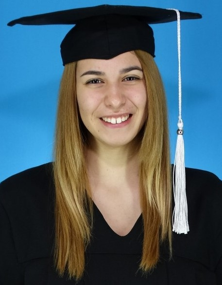

Agustina Rodriguez
Ingeniera en Sistemas
Calle 25 de Mayo, 99, Entre Ríos, Argentina
agus.rdgz7@gmail.com
DATOS GENERALES
Fechas de Nacimiento: 05-06-2000
Teléfono: +54 341 211-0195
Nacionalidad: Argentina
Estado Civil: Soltero
FORMACIÓN ACADÉMICA
Estudios Primarios: Centro Educativo Adventista de Sagunto - Valencia, España
Estudios Secundarios: Centro Educativo Adventista de Sagunto - Valencia, España
Instituto Adventista de Balcarce - Buenos Aires, Argentina
Estudios Universitarios: Universidad Argentina del Plata - Entre Ríos, Argentina
EXPERIENCIA LABORAL
Limpiadora de Hogares
Asistente de Profesor de Secundaria
Asistente de Comedor Social
IDIOMAS
Español - Nivel Avanzado
Inglés - Nivel Intermedio
Francés - Nivel Básico